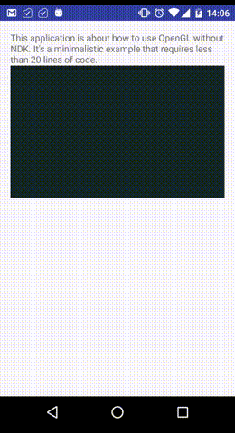

Kotlin Android GLSurfaceView example
How to use GLSurfaceView in your Android project? Example written in Kotlin! :-)
This minimalistic example requires less than 20 lines of Kotlin code:
class MainActivity : AppCompatActivity() {
override fun onCreate(savedInstanceState: Bundle?) {
super.onCreate(savedInstanceState)
setContentView(R.layout.activity_main)
glSurface.setRenderer(TutorialRenderer())
}
class TutorialRenderer : GLSurfaceView.Renderer {
var color = 0f
var colorVelocity = 1f/60f
override fun onDrawFrame(gl: GL10){
if (color > 1 || color < 0){
colorVelocity = -colorVelocity
}
color += colorVelocity
gl.glClearColor(color * 0.5f, color, color, 1f)
gl.glClear(GL_COLOR_BUFFER_BIT)
}
override fun onSurfaceCreated(gl: GL10, config: EGLConfig){}
override fun onSurfaceChanged(gl: GL10, width: Int, height: Int){}
}
}And this's the result:

Download and try it yourself!